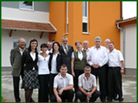

|
Bemutatkozás
Cégünket, a Korax Mûgyantagyártó és Kereskedelmi Kft-t
magyar magánszemélyek alapították 1991-ben.Kezdetben a
villamos és elektronikai ipar részére kifejlesztett epoxi és
poliuretán mûgyanta kompozíciók gyártásával foglalkoztunk.
1992-re ezen a területen a legnagyobb hazai gyártóvá
váltunk, és ezt a pozíciót azóta is õrizzük. Termékeinket VILEPOX®
és VILTER® márkanéven
forgalmazzuk széles választékban. Partnereink mûszaki
fejlesztésében is részt veszünk speciális igényeiknek
megfelelõ típusok kidolgozásával. Jelenleg több mint ötven
gyanta- és lakkrendszer képezi választékunkat, amellyel a
villamosiparban, energetikában és elektronikában használatos
szigetelõlakkok- és gyanták szinte teljes körét lefedjük. |
|
 |
1992-ben
bõvítettük mûködési területünket, megkezdtük az építõipari
rendeltetésû, AMERIN® márkanéven
forgalmazott mûgyantás padlóanyagok és ecsetgyanták gyártását. Az
intenzív K+F munka eredményeként széles termékválasztékot
alakítottunk ki, és így bevonatrendszereink megoldást nyújtanak a
legtöbb, mûgyantás padlókkal kapcsolatos problémára. Vevõinknek
széles körû alkalmazástechnikai, és mûszaki szervízszolgáltatást is
nyújtunk. Igény esetén padló kivitelezési munkát is vállalunk,
amelynek elvégzésére széles szakkivitelezõi partnerhálózatot
alakítottunk ki. Megalakulásunk óta termékeinkkel több mint 2 millió
m2 mûgyantás padló készült el.
Cégünk 2003 októberében ISO 9001 minõségügyi rendszert vezetett be,
melyet a(z) European-Cert Kft tanúsít. Termékeink magyar (ÉMI, OÉTI)
és Európai Uniós (CE) minõsítésekkel rendelkeznek.
Termékeinket Magyarországon közvetlenül és területi képviselõkön
keresztül értékesítjük. Exportunk elsõsorban a környezõ országokba,
Lengyelországba, Szlovákiába és Romániába irányul, ahol képviseletek
segítik a kereskedelmi munkát.
Termékeinkkel vagy cégünkkel kapcsolatos kérdésével kérjük,
forduljon hozzánk bizalommal. |